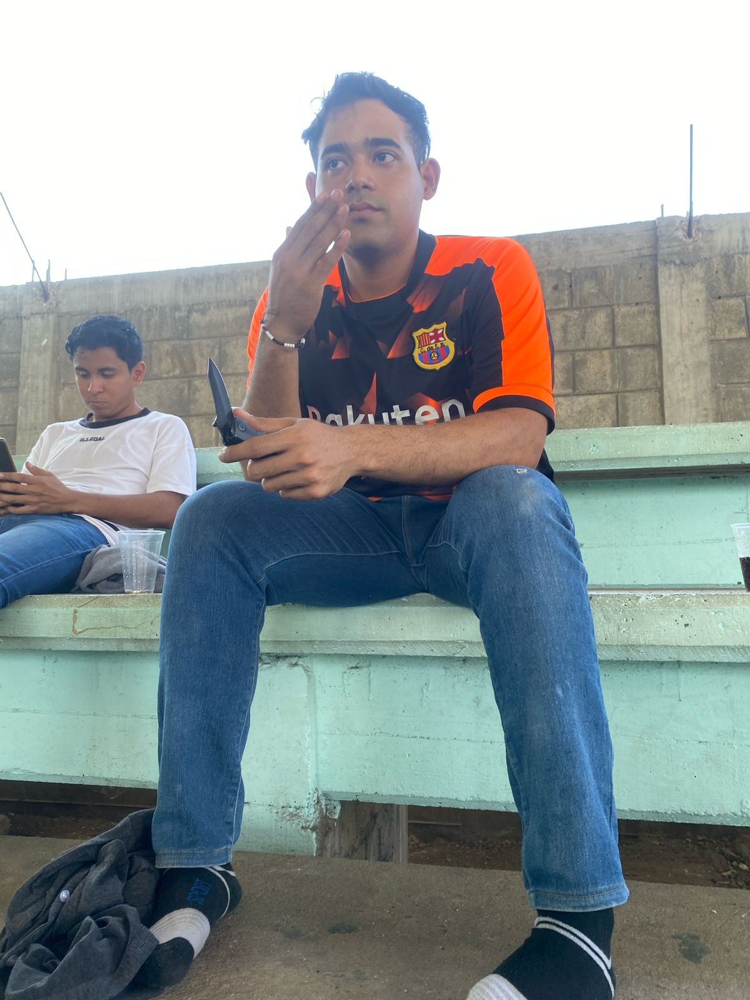
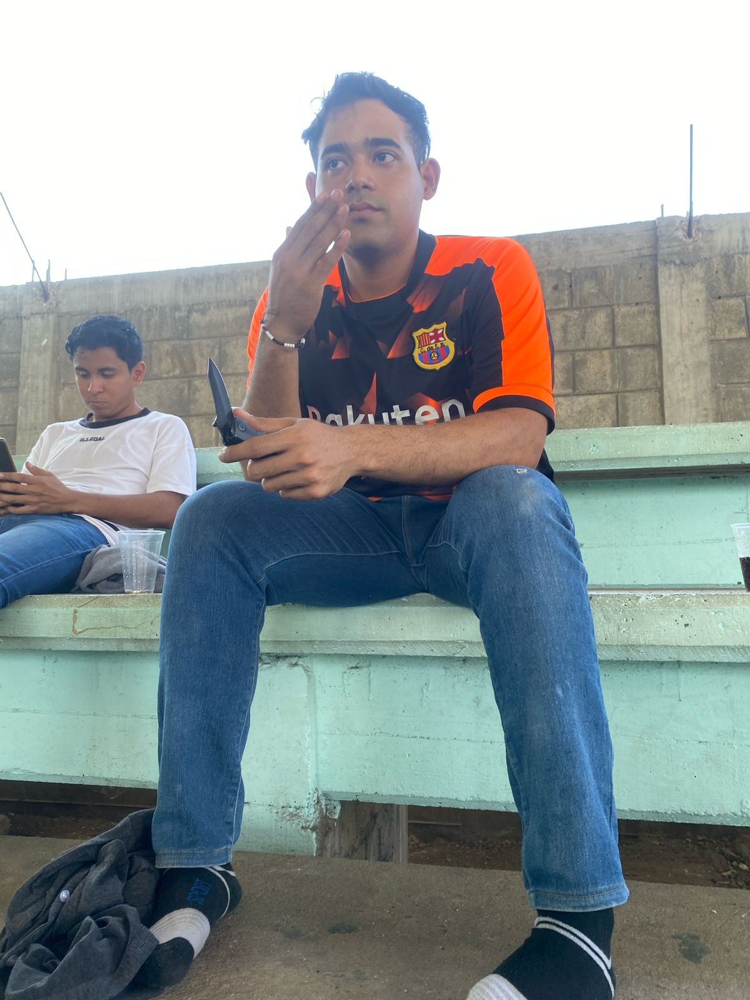

Datos Personales
Nombre: José ngel Alonso León
Edad: 21 años
Ubicación: Tlapehuala
Estudios: Ingeniería en Informática en el Tecnológico de Ciudad Altamirano
Galería de Imágenes
 

¿Por qué Elegirme?
- Genética privilegiada (guapo, barbón y bien proporcionado)
- Buenos modales y carismático
- Fitness y saludable
- Independiente y con múltiples negocios
- Programador y gamer
- Protector de su hermano Carlitos Toys
reas de Mejora
- A veces, su estilo de vestir es cuestionable
- Le gusta demasiado la diversión
- Otaku en un 50%
- Distracción y falta de puntualidad
- En proceso de superar su pasado
Contacto
Si te interesa conocer más, 隆envía un mensaje! TEL. 733 593 2593 CORREO: joseleon2022.jaa@gmail.com